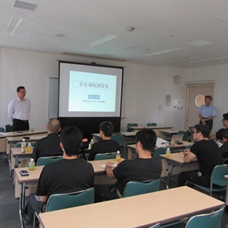
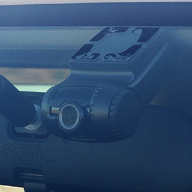
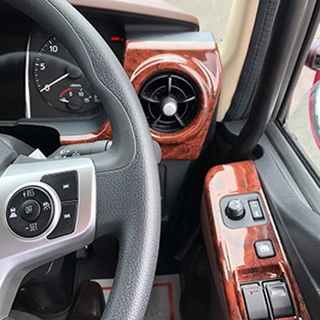
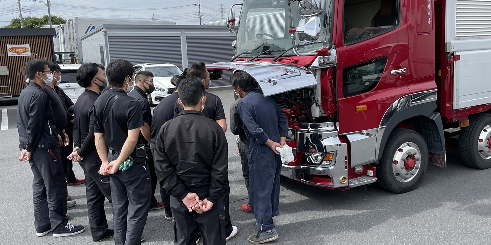

大型車が公道を走るということは、それだけの責任を背負うということ。輸送の安全に関する計画の策定・実行・チェック・改善（PDCA）を確実に実施し、安全対策の見直しを不断に行いながら、『輸送の安全』を意識した業務を全従業員一丸となって遂行します。

公益社団法人全日本トラック協会の定めた安全基準をクリアし、安全性優良事業所（Gマーク）として認定されています。本社営業所は2015年の初取得から4回の更新を重ねています。
| 本社営業所 | 2015年 取得 ／ 2024年 4回目更新 |
|---|---|
| 湘南営業所 | 2018年 取得 |
| 習志野営業所 | 2022年 取得 ／ 2024年 2回目更新 |
| 群馬営業所 | 2024年 取得 |

3ヶ月に一度、全従業員を対象とした定例安全対策会議を実施。社内のヒヤリハット情報を基に意見を交わし、事故多発地点や危険箇所は運行前点呼で全乗務員に周知します。

国土交通省に定められた安全教育に加え、外部機関による安全教育や危険予知トレーニング（KYT）を実施。社内だけでは気づけない視点で事故防止に努めています。

従業員の健康が安全な輸送に繋がるという認識のもと、健康診断を年2回確実に実施。診断結果に基づく個別の保健指導も行っています。

動態管理・ドライブレコーダーを最大限に活用し、実際にあったヒヤリハットを全社員で共有。データ分析結果を基に個別に指導します。万が一に備え、貨物保険にも加入しています。
弊社は走行速度に「社速」を設定しています。高速道路は80km、一般道は法定速度。当たり前を、毎日欠かさず守ります。
| 安全方針 | 輸送の安全に関する、計画の策定・実行・チェック・改善（PDCA）を確実に実施し、安全対策の見直しを不断に行い、『輸送の安全』を意識した業務を全従業員一丸となって遂行する。 現場における安全に対する声を真摯に受け止め、全従業員で共有し安全確保の重要性を意識させる。 従業員の健康が安全な輸送に繋がるという認識を持ち、健康診断（年2回）を確実に行い健康管理を徹底する。 |
|---|---|
| 社内外への周知方法 | 安全を確保するために必要な情報等を社内（事務所、休憩室）に掲示。併せて運行前点呼時に口頭で伝達する。 全従業員を対象とした定例安全対策会議の実施。健康診断結果に基づく個別保健指導の実施。 |
| 2025年度の安全目標 | 人身事故 0件 ／ 物損事故 0件 |
| 目標達成のための計画 | 定例安全対策会議を開催して、危険予知トレーニング（KYT）などを含めた安全に係わる講習会を実施する。 デジタコ・ドライブレコーダー等の機器を活用し、データ分析結果を基に個別に指導する。 社内外の事故事例を共有し、全従業員からヒアリングを行い再発防止対策を展開（共有）する。 |
| 安全に関する情報交換方法 | 定例安全対策会議の場で『社内ヒヤリハット情報』を基に、積極的に従業員同士で意見の交換をする。 事故多発地点や危険箇所の情報を収集し、運行前点呼時に全乗務員に周知する。 |
| 安全に関する反省事項 | 事故の大小に関わらず、再発させないための教育と指導が行き届かなかった事。 事故発生直後の展開不足（遅延など）により、直近での類似事故の発生を防止出来なかった事。 全乗務員に対して、安全に対する意識向上を計りきれなかった事。 車両事故、貨物事故ともに、事故をゼロに出来なかった事。 |
| 反省事項に対する改善方法 | 社内事故を遅滞なく全従業員に展開する。 定例安全会議での意見交換やヒヤリハットを軽視せず、安全に対する高い意識を全従業員で持つ。 |
| 人身事故 | 目標 0件 ／ 結果 0件 ── 目標達成 |
|---|---|
| 物損事故 | 目標 0件 ／ 結果 6件 ── 目標未達成 |
| 自動車事故報告規則 第2条に規定する事故 | 0件 |
平日 9:00 – 18:00 ／ お問い合わせフォームは24時間受付
お問い合わせフォーム →